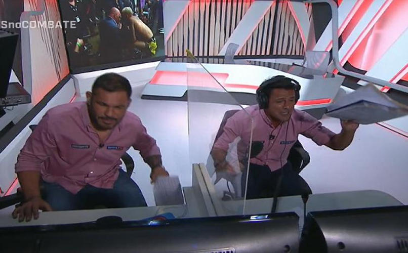
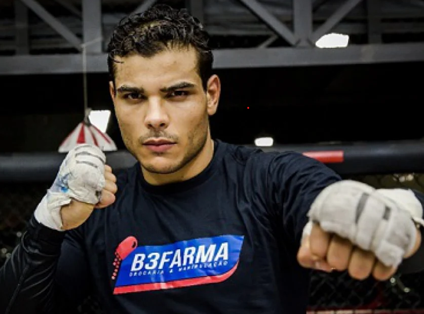

Umas das lutas mais esperadas nos últimos tempos, Paulo Henrique Costa mais conhecido como Paulo borrachinha é ídolo do povo brasileiro e favorito para ganhar a disputa contra Israel Mobolaji Temitayo Odunayo Oluwafemi Owolabi Adesanya ou mais conhecido como Israel adesanya.
A luta que ocorreu no dia 26 de setembro de 2020 as 23:00 horas, onde o canal combate comentado por um dos melhores comentaristas dos últimos anos Rhoodes Lima fez nada mais nada menos uma performance inigualável comentando essa luta onde ocorreu uma das maiores reviravoltas no mundo da luta.
Paulo costa um ídolo do povo brasileiro atua como Striker (lutadores que preferem lutar trocando socos e chutes) contudo também é faixa preta em Jiu-jítsu brasileiro assim se garantindo tanto em pé quando no chão do tatame, com um cartel de 13 vitórias e 1 derrotas (sendo essa contra Adesanya), assim antes da luta estava invicto.
Como uma das lutas mais esperadas do ano teve um final triste e vergonhoso pro esporte, a luta acabou com a derrota de Paulo Borrachinha e se não bastasse essa infelicidade o lutador Adesanya faz um gesto totalmente desrespeitoso ao fim da luta, assim causando uma indignação a todos os fãs do esporte.
Dias após a luta Paulo Borrachinha vem a suas redes sociais para alertar tanto seus fãs como Adesanya que ele está treinando incansavelmente para poder ganhar a próxima luta, mandando um aviso ao rival para parar de mandar mensagens amigáveis nas suas redes sociais pois ele não está lutando para ser amigo de ninguém, mas sim para provar a todos que ele é o melhor lutador.(Confira abaixo o video que Paulo Costa postou em suas redes sociais)
{kind=link}